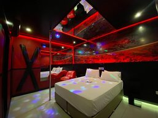
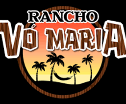
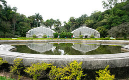
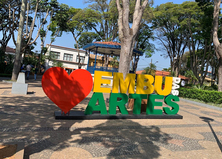
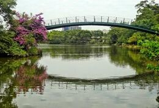
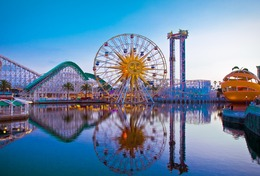
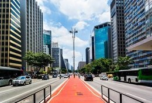
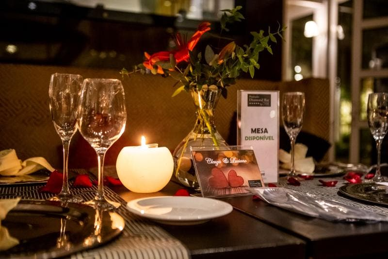
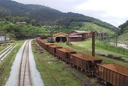

-
Motel
Esse não é ideia, já foi definido
Podemos escolher o local
-
Rancho da vó Maria
Local ao ar livre, com comida e música ao vivo
Localizado em Mairiporã
-
Jardim Botânico
Jardim com vista incrível, espaço agradável para piquinique entre outras coisas
Localizado em Vila Água Funda
-
Embu
Passeio pelo Embu, podemos conhecer alguns lugares diferentes
Local: Embu, espaço - qualquer um
-
Parque Ibirapuera
Que tal irmos para o local que nos conhecemos?
Um passeio de bicicleta, um piquinique.
-
Parque de diversões
E se fossemos nos aventurar um pouco?
Sair um pouco da rotina, sentir um frio na barriga, uma coisa diferente.
-
Paulista
Role pela Paulista, conhecendo parques e lugares diferentes
Locais diferentes dos quais estamos acostumados
-
Vila Madalena
Rôle pela Vila Madalena (não conheço o lugar, pode me apresentar? Ou podemos conhecer juntos
Sei que é um local bem movimentado em
-
Teatro
Que tal irmos para um teatro? Adoraria conhecer🥰
Podemos pensar em peças, musicais, stand up,etc.
-
Restaurante
Topa um jantar? Podemos ir em um restaurante ou usarmos a imaginação.
OBS: Esse tem restrições devido ao paladar infantil da criadora do site.
-
Paranapiacaba
Para não falar que avisei antes. Lugar onde se vê o mar, neblina que caracteriza o lugar, trêm, cachoeira, parques, culinária incrível.
Está localizado bem perto de Santo André, podemos ir até de metro, transporte turistico.
-
ME SURPREENDA
Aqui deixo você a vontade para escolher o nosso itinerário
Fico a disposição para qualquer ideia.